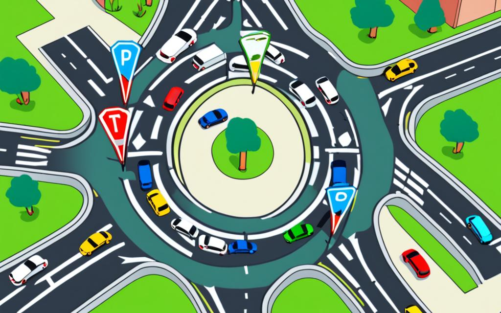

Roundabouts are becoming increasingly common throughout Ontario, including Windsor, and they can be intimidating for new drivers. However, with proper understanding and practice, navigating roundabouts becomes second nature. At Rajput Driving School, we've helped hundreds of students master roundabout navigation, and this comprehensive guide will teach you everything you need to know about safely and confidently navigating these traffic circles.

What is a Roundabout?
A roundabout is a circular intersection where traffic flows counterclockwise around a central island. Unlike traditional intersections with traffic lights or stop signs, roundabouts use yield signs to control traffic flow. This design promotes continuous traffic movement and reduces the severity of accidents compared to conventional intersections.
Key Benefits of Roundabouts:
Improved Safety: Reduces severe accidents by 78% compared to traditional intersections
Better Traffic Flow: Continuous movement reduces congestion and delays
Environmental Benefits: Less idling means reduced emissions and fuel consumption
Lower Maintenance: No traffic signals to maintain or repair
Understanding Roundabout Components
Essential Elements:
Central Island: The raised circular area in the center that vehicles drive around
Circulatory Roadway: The curved road that vehicles travel on around the central island
Splitter Islands: Raised areas that separate entering and exiting traffic
Yield Line: The point where entering vehicles must yield to circulating traffic
Exit Points: The locations where vehicles leave the roundabout
Step-by-Step Roundabout Navigation
1. Approach the Roundabout
As you approach a roundabout, follow these steps:
Reduce Speed: Slow down to 15-20 km/h as you approach
Choose Your Lane:
Right lane: For turning right or going straight
Left lane: For turning left or going straight (if available)
Watch for Pedestrians: Check crosswalks for pedestrians before entering
Read Signs: Look for directional signs indicating which exits lead where
2. Enter the Roundabout
This is the most critical step in roundabout navigation:
Yield to Circulating Traffic: Always yield to vehicles already in the roundabout
Look Left: Check for vehicles approaching from your left
Wait for a Gap: Only enter when you have a safe opportunity
Enter When Safe: Proceed into the roundabout when the way is clear
3. Navigate the Roundabout
Once inside the roundabout:
Stay in Your Lane: Maintain your position within your chosen lane
Keep Moving: Don't stop inside the roundabout unless absolutely necessary
Signal Your Exit: Use your right turn signal before your intended exit
Watch for Other Vehicles: Be aware of vehicles changing lanes or exiting
4. Exit the Roundabout
To exit safely:
Signal Right: Turn on your right signal before your exit
Check for Pedestrians: Look for pedestrians in the crosswalk
Exit Smoothly: Make a smooth right turn to exit
Turn Off Signal: Turn off your signal once you've exited
Different Types of Roundabouts
Single-Lane Roundabouts
These are the most common type in residential areas and smaller intersections:
Only one lane of traffic circulates around the central island
Easier to navigate for new drivers
All vehicles follow the same path
No lane changes required once inside
Multi-Lane Roundabouts
These handle higher traffic volumes and are found on major roads:
Two or more lanes circulate around the central island
Require careful lane selection before entering
May have different exit points for different lanes
Allow lane changes within the roundabout (if safe)
Mini Roundabouts
Smaller versions often found in residential neighborhoods:
Smaller central island, sometimes just painted markings
Lower speed limits (typically 15-25 km/h)
Often used to calm traffic in residential areas
Same navigation rules apply, but at slower speeds
Common Roundabout Scenarios
Scenario 1: Turning Right (First Exit)
When taking the first exit (turning right):
Stay in the right lane as you approach
Signal right before entering
Yield to circulating traffic
Enter and immediately exit
Scenario 2: Going Straight (Second Exit)
When continuing straight through:
Choose the appropriate lane (usually right lane)
Don't signal when entering
Yield to circulating traffic
Signal right before your exit
Scenario 3: Turning Left (Third Exit or Beyond)
When making a left turn:
Choose the left lane if available
Don't signal when entering
Yield to circulating traffic
Navigate around the central island
Signal right before your exit
Scenario 4: Making a U-Turn
To make a U-turn at a roundabout:
Enter from the left lane
Go around the entire roundabout
Exit where you entered
Signal right before exiting
Common Roundabout Mistakes to Avoid
Mistake 1: Stopping Inside the Roundabout
Problem: Stopping unnecessarily inside the roundabout
Solution: Only stop if there's an emergency or you're yielding to an emergency vehicle
Mistake 2: Changing Lanes Inside the Roundabout
Problem: Attempting to change lanes while circulating
Solution: Choose your lane before entering and stay in it
Mistake 3: Not Yielding to Circulating Traffic
Problem: Entering without yielding to vehicles already in the roundabout
Solution: Always yield to traffic coming from your left
Mistake 4: Signaling Too Early
Problem: Signaling right when entering instead of before exiting
Solution: Only signal right before your intended exit
Mistake 5: Driving Too Fast
Problem: Entering or circulating too quickly
Solution: Maintain appropriate speeds (15-25 km/h in most roundabouts)
Roundabout Safety Tips
For Drivers:
Stay Alert: Always be aware of other vehicles and pedestrians
Maintain Safe Following Distance: Don't tailgate other vehicles
Check Blind Spots: Look for motorcycles and bicycles
Be Patient: Wait for safe gaps rather than forcing entry
Don't Pass: Never pass other vehicles inside a roundabout
For Pedestrians:
Use Crosswalks: Always cross at designated pedestrian crossings
Look Both Ways: Check for vehicles entering and exiting
Make Eye Contact: Ensure drivers see you before crossing
Don't Cross the Central Island: Walk around the outside
Roundabouts in Windsor and Ontario
Windsor has several roundabouts that you'll encounter during your driving experience, including:
Parent Avenue and Wyandotte Street East: A busy roundabout near the university
Various residential areas: Smaller roundabouts in newer subdivisions
Highway connections: Roundabouts connecting to major highways
Ontario-Specific Rules:
Yield to traffic already in the roundabout
Signal your exit with a right turn signal
Pedestrians have right-of-way at crosswalks
Emergency vehicles have priority - pull over if safe to do so
Practice Strategies for Roundabout Mastery
Progressive Learning Approach:
Start with Mini Roundabouts: Practice with smaller, less busy roundabouts first
Practice During Off-Peak Hours: Learn when traffic is lighter
Use the Same Roundabout: Master one roundabout before trying others
Practice Different Scenarios: Try all exits from the same approach
Build Confidence Gradually: Increase difficulty as skills improve
Mental Preparation:
Study the Layout: Look at maps or drive by to understand the roundabout
Plan Your Route: Know which exit you need before approaching
Visualize Success: Mentally practice the maneuver before attempting
Stay Calm: Don't let anxiety affect your decision-making
Advanced Roundabout Techniques
Multi-Lane Roundabouts:
For more complex roundabouts with multiple lanes:
Lane Selection: Choose your lane based on your intended exit
Lane Changes: Only change lanes if absolutely necessary and safe
Exit Strategy: Position yourself in the correct lane before your exit
Traffic Flow: Understand which lanes lead to which exits
Heavy Traffic Situations:
When roundabouts are busy:
Be Patient: Wait for appropriate gaps rather than forcing entry
Watch for Aggressive Drivers: Stay alert for drivers not following rules
Maintain Position: Don't let other drivers pressure you into unsafe moves
Plan Ahead: Consider alternative routes during peak traffic times
Roundabouts and Driving Tests
Roundabouts are often included in driving tests, so mastering them is essential for test success:
What Examiners Look For:
Proper Yielding: Correctly yielding to circulating traffic
Lane Selection: Choosing the appropriate lane for your intended direction
Signaling: Using signals appropriately when exiting
Speed Control: Maintaining appropriate speeds
Observation: Checking for other vehicles and pedestrians
Common Test Failures at Roundabouts:
Failing to yield to circulating traffic
Stopping unnecessarily inside the roundabout
Incorrect lane usage
Not signaling when exiting
Driving too fast or too slow
Conclusion: Master Roundabouts with Confidence
Roundabouts may seem intimidating at first, but with proper understanding and practice, they become a natural part of driving. The key is to remember the fundamental rule: yield to traffic already in the roundabout, choose your lane wisely, signal your exit, and stay calm.
At Rajput Driving School, we provide hands-on training with roundabouts throughout Windsor. Our experienced instructors will help you build confidence and master these intersections safely. With practice and proper technique, you'll navigate roundabouts like a pro.
Remember, roundabouts are designed to improve traffic flow and safety. Once you understand how they work, you'll appreciate their efficiency and find them easier to navigate than traditional intersections with traffic lights.